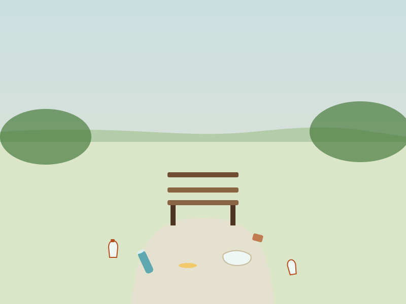
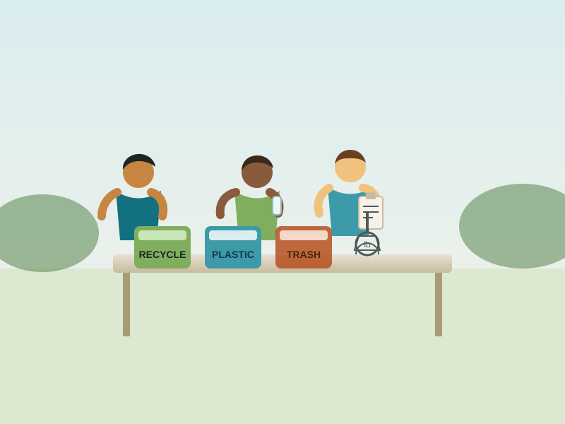

About the Project
We're students from Westchester who got tired of seeing trash pile up in the parks we grew up in, so we started doing something about it.
It started with a walk we'd done a hundred times.
A few of us were walking the Bronx River Pathway, something we'd done since we were kids, and we couldn't ignore it anymore: bottles caught in the reeds, bags snagged on branches, wrappers pushed into the mud at the water's edge. It wasn't new. It had just been building up, cleanup after cleanup that never happened.
So instead of just complaining about it, we picked a Saturday, grabbed some trash bags, and went out and did a first cleanup ourselves. That first morning turned into a plan, and the plan turned into the Westchester Youth Waterway Initiative, a Roots & Shoots project run entirely by the students who started it.

This isn't a club with adult supervisors making the calls. We make the calls.
Every part of this project, from picking a cleanup date to deciding what goes in a flyer, is planned and run by students. Here's what that actually looks like:
Planning cleanups
We scout sites, pick dates, figure out what supplies we need, and get permission to be there. If a cleanup happens, a student made it happen.
Designing materials
Flyers, social posts, the printable guides on this site: students write and design all of it, start to finish.
Tracking data
We weigh and log what we collect after every event, and we take the water quality readings that go into our environmental data.
Organizing & outreach
We recruit volunteers, coordinate check-in on cleanup day, and talk to local families, schools, and businesses about what we're doing and why. We also put up signs at the sites we clean and take time to explain the project to people we run into on the pathway, especially younger kids, because getting them thinking about this early matters just as much as the cleanup itself.
You don't need experience. You just need to show up.
This project is open to every background, identity, and experience level: students, families, longtime volunteers, and people who've never done a cleanup in their life. Some of our most active members started out just curious. If you care about the river, there's a place for you here.
Not everyone wants to spend a Saturday picking up litter, and that's fine. There's more than one way to contribute:
